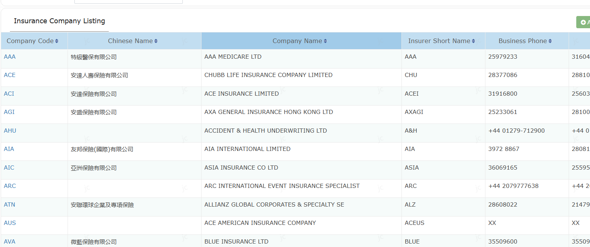
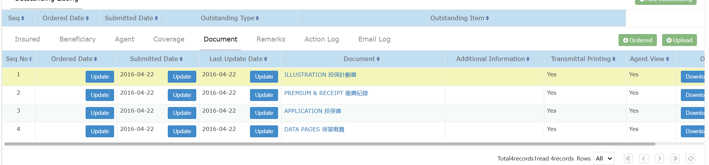

用short
name 排,
如 NB
查出多於一個時

Upload jpg/png 轉為 PDF
Add
new b folder, in email sending template.
default sender as
nb@pla.hk,
希望不同 folder
可用不同 email
sender
加多五個 template no.14-18
(JC 要覆我, status 點 update by email send or received )
Policy search interface add able to “expiry date”
PDF
導入 NB
問題
Insured
(被保人)
個兩欄,
失欠了 policy
owner fields
Missed finance session
最下面欠了coverage (即.產品)
JC 要更新 2025 版PDF, 共2份 一般及百慕達